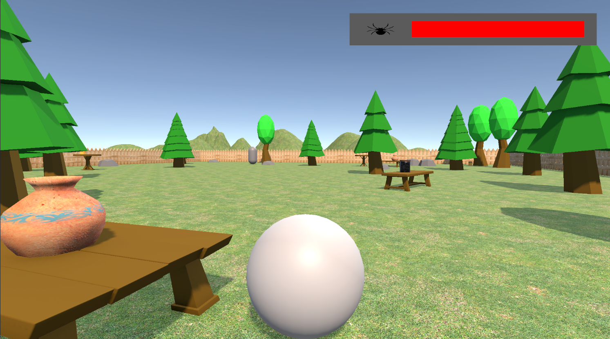
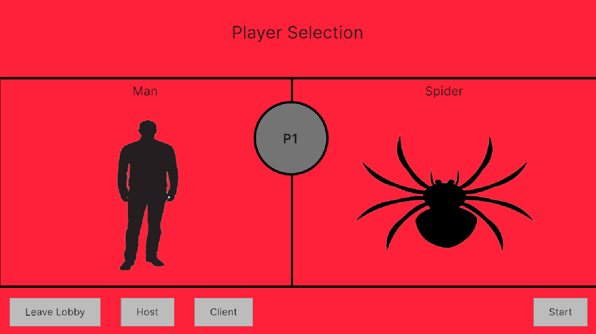
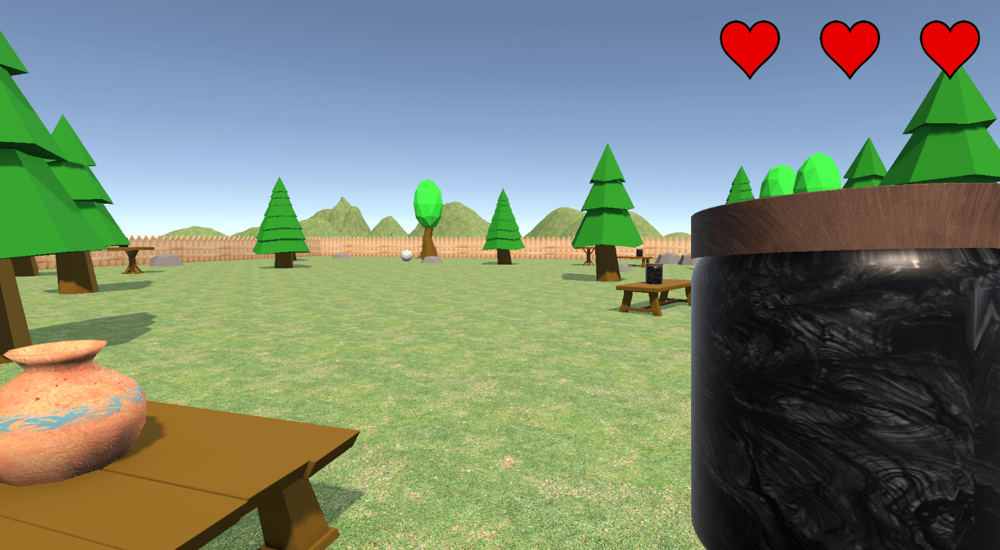

Online Multiplayer Prototype

This project demonstrates use of online multiplayer interactivity using Unity's Online Multiplayer features. These consist of Multiplayer
Tool and Netcode for Gameobjects. I wrote the functionality for this Prototype in C#. In this prototype the player can chose to control a man
or a spider in an aysmmetrical 1 vs 1 battle.
Demo Video
Below is a demo video showing the prototype played from both server and client perspectives. I used Unity's multiplayer play mode allow me to control
multiple game instances on one PC.
Planning & Development
The first challenge in this prototype was to get the main menu working. I did this using Unity's UI Elements feature and made use of Network variables
to define whether the player had selected man, spider or niether. I programmed the logic to make sure both clients had connected and both spider and man
roles had been selected before the level could begin.

To handle player movement that's replicated over both clients, I made both players into Network Gameobjects. This means their components such as rigidbody
values are replicated over each client. For specific actions that needed to be replicated, I used Remote Proccedure Calls (RPCS) to propogate an action to client,
server or everyone. An example of one of these actions would be the man character throwing the projectiles at the spider.

Once either player has ran out of health. The Connection is severed and both clients are sent back to the selection screen. I have a client updater script
that is loaded initially once the project is ran. Each time the players re-load the game, an integer in the client updater script is increased. This is because
network object IDs can't be recylcled and therefore need updating if the player are to possess newly created character network objects.